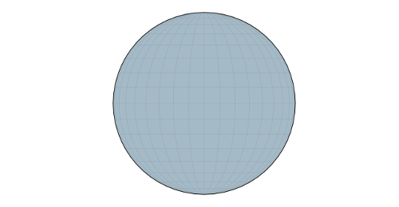

Visualizing meteorites
Visualizing where meteorites felt
Visualizing where meteorites felt
NASA provides enteresting datasets. Of course, there are a lot of things about space but we can also find out some data about earth itself, specially about meteorites. This dataset can be reached at this address: https://data.nasa.gov/Space-Science/Meteorite-Landings/gh4g-9sfh.
We found that it would be fun to see on a map if some meteorites launded around and to play with such data.
Let's start with the map itself.
As you can see on the previous figure, there are two dedicated resources for maps:
To create our map, we will leverage the first one with the following content:
POST /maps/
(Content-Type: application/json)
{
"id": "1",
"name": "World",
"type: "d3js",
"projection": "orthographic",
"scale": 250,
"interactions": {
"moving": "drag",
"zooming": "mouveWheel"
}
}This content gives some hints about the map we want to create like its projection, its initial scale and the way to interact wth it. We choose here to enable both zooming (with the mouse wheel) and moving (with drag'n drop).
Whereas we have our map created, nothing appears since there is no content in it. Within our application, content corresponds to layers that can be map data like continents boundaries and raw data like rates or geographical positions (longitude, latitude).
We will now create all these layers.
The projection orthographic is really great since it allows to see earth as a globe. To make this more beautiful, we will add some blue background for oceans and draw the shapes of continents.
To visualize the globe, we need first to create a graticule layer. This is the term for this in D3.js (http://d3js.org/), the underlying library we use.
Like for maps, we have similar resources for map layers. We have separate resources since layers can be used against several maps.
To create our layer, we will leverage the method POST of the list resource with the following content. We specify in some hints to configure what we want to display (background, lines and globe border) and some styles to define colors and line properties. Don't forget to set the identifier of the map as reference.
POST /layers/
(Content-Type: application/json)
{
"id": "graticuleLayer",
"type": "graticule",
"name": "Graticule",
"applyOn": "layers",
"applied": true,
"visible": true,
"maps": [
"067e6162-3b6f-4ae2-a171-2470b63dff00"
],
"display": {
"background": true,
"lines": true,
"border": true
},
"styles": {
"background": {
"fill": "#a4bac7"
},
"border": {
"stroke": "#000",
"strokeWidth": "3px"
},
"lines": {
"stroke": "#777",
"strokeWidth": ".5px",
"strokeOpacity": ".5"
}
}
}Now this first layer created. Our map looks like this.

Looks promising but there are still layers to define! The next step is to configure shapes for continents. D3 comes with a lot of samples of maps and specially, one for continents. The corresponding file provides data defined with format TopoJSON, "an extension of GeoJSON that encodes topology. Rather than representing geometries discretely, geometries in TopoJSON files are stitched together from shared line segments called arcs" (quoted from the TopoJSON web site).
Based on this file (that we imported within a folder of our Web API), we can create a new layer for GeoData. This layer is quite simple since we almost need to reference the file and tell the root object within the file we want to use (here countries).
POST /layers/
(Content-Type: application/json)
{
"id": "worldLayer",
"type": "geodata",
"name": "World",
"applyOn": "layers",
"applied": true,
"visible": true,
"data": {
"url": "http://mapapi.apispark-dev.com:8182/files/continent.json",
"rootObject": "countries",
"type": "topojson"
}
}Now this second layer created. We can see continents displayed on our map.
We have now the foundations of our map created. Let's actually dive into ou dataset.
We downloaded the file from the NASA web site. The file contains 34,513 meteorites and its structure is provided below:
For simplicity, we directly uploaded the file of the dataset within a folder of our Web API with the path /data (it's an example). We could go further and create a dedicated entity to store such data and upload then them using the bulk import of the entity browser. This will the subject of a next post...
In attribute values, expressions can be provided. In this context, d corresponds to the current data of elements and contains all hints regarding this current row.
The first section of the layer configuration consists in data. We specify here the data file to load for this layer and some hints to filter and sort data. As a matter of fact, since there is an important gap within mass of meteorites, we need to display subset of data to make the map readable.
POST /layers/
(Content-Type: application/json)
{
"id": "meteorites",
"type": "data",
"mode": "objects",
"name": "Meteorites",
"data": {
"url": "http://mapapi.apispark-dev.com:8182/files/Meteorite_Landings.csv",
"type": "csv",
"source": "meteoritesSource",
"where": "d.mass > 10000",
"order": {
"field": "mass",
"ascending": false
}
},
(...)
"applyOn": "layers",
"applied": true,
"visible": true
}The second section is about what we want to display and how. We want to draw a circle for each meteorite at the place where it fell. The radius of the circle is proportional with its mass and the background color dependent on the year of landing. The more the date is close from now, the more the color is close from red.
Color transition is handled by the threshold feature of D3 configured using a palette. Some beautiful palettes are provided by the link: http://bl.ocks.org/mbostock/5577023.
Following snippet provides the complete configuration of this shape:
{
"id": "meteorites",
"type": "data",
"mode": "objects",
"name": "Meteorites",
(...)
"display": {
"shape": {
"type": "circle",
"radius": "d.mass / 5000000",
"origin": "[ d.reclong, d.reclat ]",
"opacity": 0.75,
"threshold": {
"code": "YlOrRd",
"values": [ 1800, 1900, 1950, 2000, 2015 ],
"colors": [ "#ffffb2", "#fed976", "#feb24c",
"#fd8d3c", "#f03b20", "#bd0026" ]
},
"value": "parseDate(d.year).getFullYear()"
}
},
(...)
"applyOn": "layers",
"applied": true,
"visible": true
}Now this third layer created. We can see where big meteorites fell on our map.
We can add more hints about the displayed data like the color legend and tooltip providing the complete data for the meteorite landing. To add this to the map, we simply need to add sections legend and tooltip, as described below. In this case, we need to leverage the method PUT of the single resource with the layer content. We can notice that all the content of the layer needs to be specified as payload of the request.
PUT /layers/meteorites
(Content-Type: application/json)
{
"id": "meteorites",
"type": "data",
"mode": "objects",
"name": "Meteorites",
(...)
"display": {
(...)
"legend": {
"enabled": true,
"label": "d"
},
"tooltip": {
"enabled": true,
"text": "'Name: '+d.name+'
Year: '+d.year+'
Mass (g): '+d.mass"
}
}
(...)
}To finish, let's configure the interaction of the layer. It simply corresponds to specify that we want to display the tooltip area when clicking on circles.
{
"id": "meteorites",
"type": "data",
"mode": "objects",
"name": "Meteorites",
(...)
"behavior": {
"tooltip": {
"display": "click"
}
},
(...)
}Let's have a look at our map.
The big advantage of such approach is that we can easily configure the data to display and the way to display them to be relevant. We will show now how to play with subsets of data.
As we can see, there is an important gap between masses of meteorites. In last sections, we mainly displayed the big ones. Restricting the data to display small ones allows to show a different representation of meteorites datas.
We will display here meteorites that have mass inferior to 50kg. We simply need to update the attribute where in the section data: 'd.mass < 50000' instead of 'd.mass > 10000'. In this case, we need to increase a bit the radius of displayed circles: 'd.mass / 50000' instead of 'd.mass / 5000000'.
Below are the two updated sections within the map definition:
{
(...)
"data": {
"url": "http://mapapi.apispark-dev.com:8182/files/Meteorite_Landings.csv",
"type": "csv",
"where": "d.mass < 50000",
"order": {
"field": "mass",
"ascending": false
}
},
"display": {
"shape": {
"type": "circle",
"radius": "d.mass / 50000",
"origin": "[ d.reclong, d.reclat ]",
"opacity": 0.75,
"threshold": {
"code": "YlOrRd",
"values": [ 1800, 1900, 1950, 2000, 2015 ],
"colors": [ "#ffffb2", "#fed976", "#feb24c",
"#fd8d3c", "#f03b20", "#bd0026" ]
},
"value": "parseDate(d.year).getFullYear()"
},
(...)
},
(...)
}By reloading data, we have now the following map.
In this case, the map is less reactive since there are much more data to display. Some optimizations would be interesting like only applying data on the map for the displayed area.